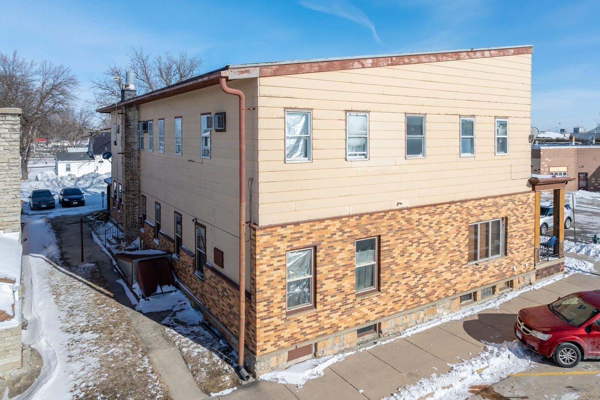

PROPERTY TAXES
Property Taxes After Buying a Rental: Why the Seller's Tax Bill Isn't Your Tax Bill
By Jerry Myers · owner of a 10-unit rental

My property taxes on my 10-unit went from $2,345 a year to $6,350 after reassessment.
That's about $333 more every month, straight out of cash flow.
I didn't see it coming. I used the seller's tax number in my analysis because it was right there on the listing. That's one of the most common mistakes I see, and it's why "A" in my MARGIN check stands for Assessed taxes & insurance.
Here's what I wish I'd known before I bought.
Why property taxes go up after you buy a rental
Your tax bill is based on your property's assessed value. The seller's bill is based on their assessed value. That number may be years old.
In many places, a sale gives the assessor a fresh, real price to work from. Some areas reassess at sale. Others reassess on a set cycle, and your purchase price becomes the new benchmark when that cycle comes around. Either way, the price you paid is public record.
So if the seller owned the building for a long time, their tax bill may reflect a value far below what you're paying. When the assessor catches up, your bill catches up too.
The rules are different in every state and county. Some cap increases. Some don't. You need to know which kind of place you're buying in.
Ask: How long has the seller owned this property, and when was it last assessed?
How to estimate your new property tax bill
Don't use the listing's tax number. Build your own.
- Find the local tax rate. Call the county assessor or treasurer, or look it up on their website. It's often shown as a mill rate or a percentage.
- Find out how assessed value is set. Some places assess at full market value. Others use a fraction of it. Ask the assessor's office how a recent sale would be treated.
- Use your purchase price as the starting value. Then apply the assessment ratio and the tax rate.
- Compare it to the current bill. If your estimate is much higher, that gap is coming. Plan for it.
If you're unsure, call the assessor and ask directly: "If this property sells for this price, what would the new assessed value likely be?" They get this question a lot.
Ask: If my purchase price became the assessed value tomorrow, what would my yearly tax bill be?
What a reassessment does to your cash flow
Taxes are a fixed cost. They don't care if your units are full.
My bill going up by roughly $4,000 a year meant $333 less every month, before anything else went wrong. And other things did go wrong. My building was projected to bring in $5,200 a month. On a good month I collected about $4,000. Occupancy swung from 40% to 90% to 50% as the local market and economy moved.
When collections are down and taxes are up at the same time, there's no cushion left. That's how a deal that looked fine on paper starts to feel tight.
I never missed a mortgage payment. But the tax jump was one of the reasons it was harder than it had to be.
Ask: If my taxes jumped and my occupancy dropped in the same year, could I still cover the mortgage?
Don't forget insurance
Taxes and insurance often move together in a buyer's surprise list. Like taxes, the seller's insurance cost may not be what you'll pay. Their policy, coverage and history aren't yours.
Get your own insurance quote during due diligence. Don't borrow the seller's number.
Ask: Have I gotten my own insurance quote, or am I using the seller's?
Can you appeal a property tax reassessment?
Usually, yes. Most places have an appeal or review process. You'll typically need to show the assessed value is higher than what the property is actually worth, using things like comparable sales or an appraisal.
There are deadlines, and they're often short. Read your assessment notice the day it shows up.
An appeal can help if the value is wrong. It won't help if the value is right and the old bill was just low. That's why you plan for the real number before you buy, not after.
Ask: Do I know the appeal deadline and process in this county?
Build the new tax bill into your offer
This is the whole point. If the new taxes make the deal not work, you want to know before you sign.
Run your numbers with:
- Your estimated reassessed taxes, not the seller's
- Your own insurance quote
- Real collections, not projected rent
- Vacancy based on the local market, not best case
If the deal still works, great. If it only works with the old tax bill, it doesn't really work.
Ask: Does this deal still make sense with my tax bill instead of the seller's?
Summary
- The seller's tax bill is not your tax bill.
- A sale can trigger or speed up a reassessment based on what you paid.
- Estimate your own taxes using the local rate and your purchase price.
- Get your own insurance quote.
- Know the appeal process, but don't count on it.
- Make the deal work with the new numbers, or walk.
My taxes went from $2,345 to $6,350. I'd rather you find your number before closing than after.
Get the free guide
8 Truths That Can Keep Your Rental Property Deal From Falling Apart. Every truth ends with one question to ask about your deal.
Send me the free guideWant the full system and the MARGIN Calculator? See The Complete Framework.